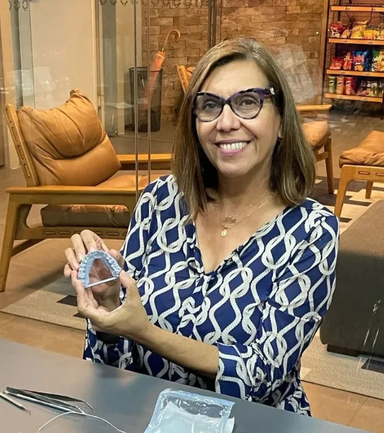
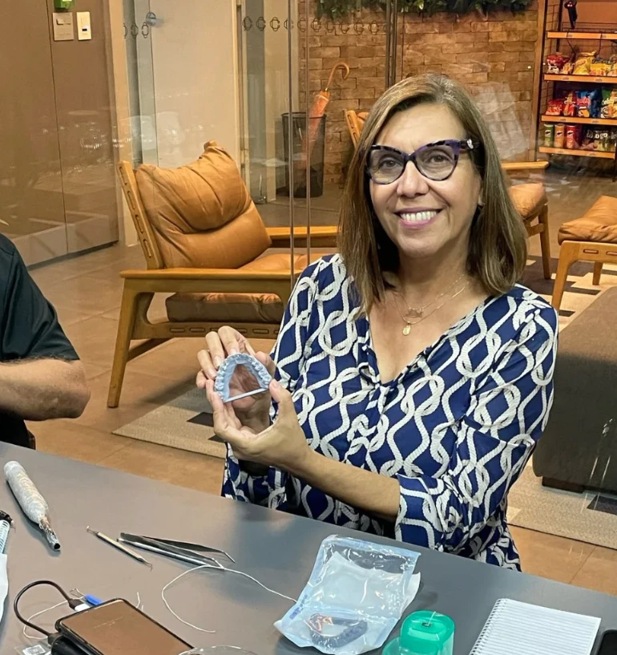
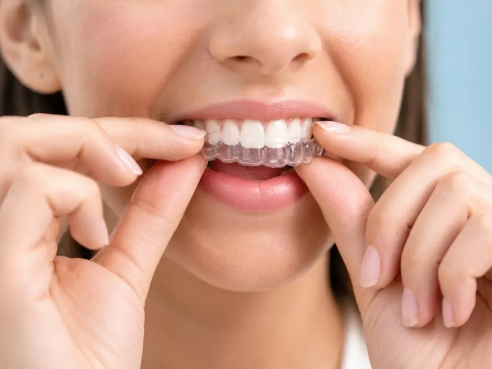
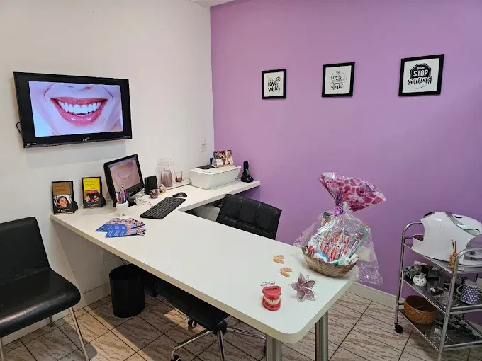
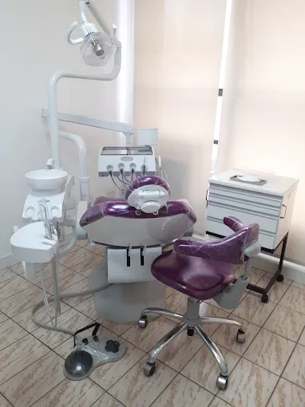
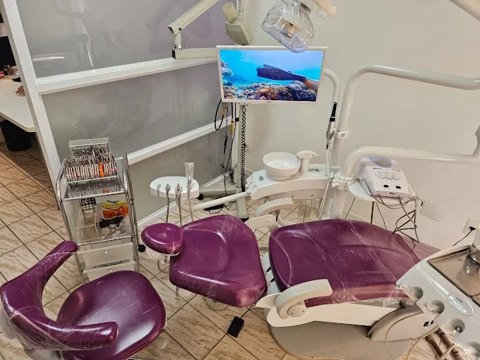
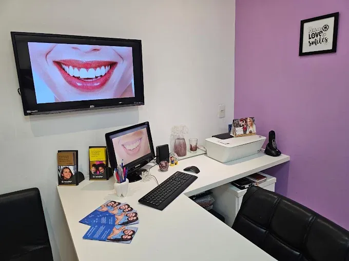

Você evita sorrir em fotos ou cobre a boca quando ri.
Especialista em OrtodontiaInvisalign Doctor
Dentes alinhados com aparelho transparente, planejado para o seu caso
Tratamento com alinhadores Invisalign em Santos, conduzido do início ao fim pela Dra. Nilza Mendes, especialista em Ortodontia. Você vê a simulação do resultado antes de começar.
- 40 anos de experiência
- Recomendada por pacientes no Google
- Centro Empresarial Queluz · Santos/SP

Planejamento
digital em 3D
digital em 3D
Invisalign Doctor✦
Ortodontia Lingual✦
Ortopedia Funcional dos Maxilares✦
Ortodontia infantil a partir de 6 anos✦
Ortodontia personalizada✦
✦
✦
✦
✦
✦
Para quem é
Você reconhece alguma dessas situações?
Quer corrigir os dentes, mas aparelho de metal não combina com o seu momento.
Usou aparelho quando era mais novo e os dentes voltaram a se mexer.
Acha que já passou da idade para alinhar os dentes.
Adultos de qualquer idade podem tratar o alinhamento dos dentes, desde que dentes e gengiva estejam saudáveis. A avaliação mostra se o Invisalign é indicado para você.
Avaliar meu caso
40
anos cuidando
de sorrisos
de sorrisos
Sobre a especialista
Quem vai cuidar do seu sorriso
Sou Nilza Mendes, ortodontista e Invisalign Doctor. Atendo muitos adultos que adiaram o tratamento por anos porque não queriam aparelho fixo. Os alinhadores mudaram essa conversa.
Hoje consigo planejar o tratamento em 3D, mostrar ao paciente a movimentação prevista dos dentes e acompanhar cada etapa de perto. Faço pessoalmente o planejamento de cada caso. Na avaliação, explico o que é possível no seu sorriso, quanto tempo deve levar e o que depende de você durante o tratamento.
- Especialista em Ortodontia
- Invisalign Doctor
- Ortopedia Funcional dos Maxilares
- Ortodontia Estética Lingual (BOT)
- CRO-SP [nº]
Tratamentos
Ortodontia pensada para cada fase da vida

Mais procurado
Quero saber mais
Invisalign para adultos
Alinhadores transparentes e removíveis para corrigir dentes tortos, espaçados ou apinhados e problemas de mordida. Você tira para comer e escovar os dentes.
- Discreto no dia a dia
- Removível para comer
- Simulação 3D antes de começar
Invisalign para adolescentes
Alinhadores com indicadores de uso, que ajudam os pais a acompanhar se o adolescente está usando o tempo recomendado.
Ortodontia infantil
Atendimento a partir de 6 anos, com Ortopedia Funcional dos Maxilares para orientar o crescimento quando há indicação.
Ortodontia lingual e convencional
Aparelho por trás dos dentes, estético ou metálico, para os casos em que essa for a melhor indicação. A escolha é feita junto com você.
Contenção
Acompanhamento depois do tratamento para manter os dentes na posição alcançada.
Como funciona
Do primeiro contato ao início do tratamento
-
01
Conversa pelo WhatsApp
Você conta o que te incomoda e agendamos a avaliação.
-
02
Avaliação e escaneamento 3D
Um scanner digital registra seus dentes em poucos minutos, sem a massinha de moldagem.
-
03
Planejamento e simulação
Você vê na tela a movimentação prevista e recebe a estimativa de tempo e investimento.
-
04
Início do tratamento
Você recebe seus alinhadores e passa a trocá-los conforme o plano, com consultas de acompanhamento.
Diferenciais
Por que fazer seu tratamento aqui
Cada caso é planejado e acompanhado pessoalmente pela Dra. Nilza, do primeiro escaneamento à contenção.
- 01
Especialista em Ortodontia
Seu caso é planejado por uma ortodontista com formação específica em movimentação dentária, e não apenas por um software.
- 02
Invisalign Doctor
Profissional certificada para planejar e conduzir tratamentos com o sistema Invisalign.
- 03
Você vê antes de decidir
A simulação 3D mostra a movimentação prevista dos dentes antes de você começar.
- 04
Acompanhamento próximo
Consultas periódicas para conferir se os dentes estão se movendo conforme o plano e ajustar o que for preciso.
- 05
Da infância à vida adulta
Atendimento a partir de 6 anos, com Ortopedia Funcional dos Maxilares e diferentes tipos de aparelho para cada fase.
Resultados
Casos tratados na clínica
Arraste para comparar o antes e o depois.
Foto depois
Foto antes
Antes
Depois
Foto depois
Foto antes
Antes
Depois
Imagens publicadas com autorização dos pacientes. O resultado e o tempo de tratamento variam de acordo com cada caso.
A clínica
Um ambiente pensado para o seu conforto
No Centro Empresarial Queluz, em Santos, com atendimento com hora marcada.




Depoimentos
Quem já tratou aqui
“Minha dentista preferida, consultório e ambiente perfeito, nota 10.”
“Fez um ótimo trabalho no meu dente, eu super indico o trabalho dela.”
Leia todas as avaliações de pacientes no perfil da clínica no Google.
Ver avaliações no Google →
Investimento
Quanto custa?
O valor do Invisalign depende da complexidade do seu caso e do número de alinhadores necessários. Por isso, o investimento é apresentado depois da avaliação, junto com o seu plano de tratamento, com condições facilitadas de pagamento.
Ver condições de pagamentoDúvidas frequentes
Antes de começar, talvez você queira saber
O Invisalign funciona para o meu caso?
Ele trata a maioria dos problemas ortodônticos, como dentes tortos, espaçados ou apinhados e vários tipos de alteração na mordida. Alguns casos têm melhor indicação com aparelho fixo. A avaliação define qual é o seu.
Quanto tempo dura o tratamento?
Depende do que precisa ser corrigido. Casos simples podem levar alguns meses, e casos mais complexos levam mais tempo. Você recebe a estimativa no planejamento, antes de começar.
Dói?
Nos primeiros dias de cada novo alinhador é comum sentir pressão nos dentes. É sinal de que eles estão se movimentando, e a maioria das pessoas se adapta rápido.
Quantas horas por dia preciso usar?
O recomendado é de 20 a 22 horas por dia. Você tira só para comer, beber algo que não seja água e escovar os dentes. O uso correto é o que mantém o tratamento no prazo previsto.
Posso comer de tudo?
Sim. Como você tira os alinhadores para comer, não há restrição de alimentos. Escove os dentes antes de colocá-los de volta.
Os outros vão perceber?
Os alinhadores são transparentes e ficam bem discretos. De perto, algumas pessoas podem notar, principalmente se houver pequenos pontos de apoio colados nos dentes, que ajudam na movimentação.
Atrapalha a fala?
Nos primeiros dias, algumas pessoas sentem uma pequena alteração ao falar. Costuma passar em poucos dias.
Sou adulto. Ainda dá para alinhar os dentes?
Sim. Não há idade limite. O importante é que dentes e gengiva estejam saudáveis, o que verificamos na avaliação.
Vocês atendem crianças?
Sim, a partir de 6 anos. Nessa fase, a Ortopedia Funcional dos Maxilares pode ajudar a orientar o crescimento quando há indicação.
Tem parcelamento?
Sim. As condições são apresentadas junto com o seu plano de tratamento, depois da avaliação.
Seu tratamento começa com uma conversa
Mande uma mensagem, conte o que te incomoda no seu sorriso e agende sua avaliação.
Falar no WhatsApp (13) 99665-2159 · Centro Empresarial Queluz, Santos/SPContato
Como chegar
- Endereço
- Av. Conselheiro Nébias, 726, conj. 74
Centro Empresarial Queluz · Vila Rica
Santos/SP · 11045-002 - WhatsApp e telefone
- (13) 99665-2159
- Horário
- Atendimento com hora marcada, até as 19h